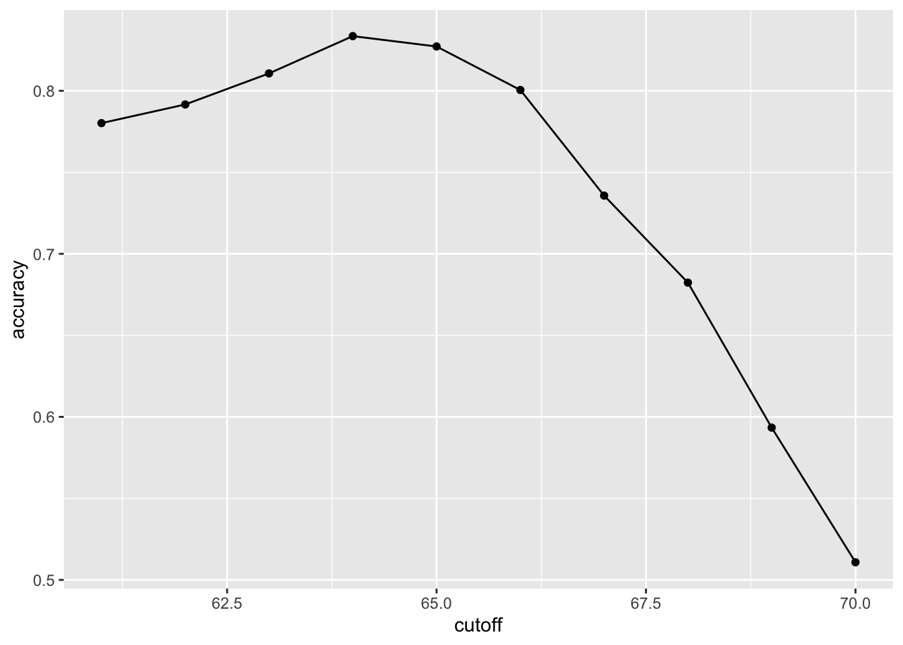
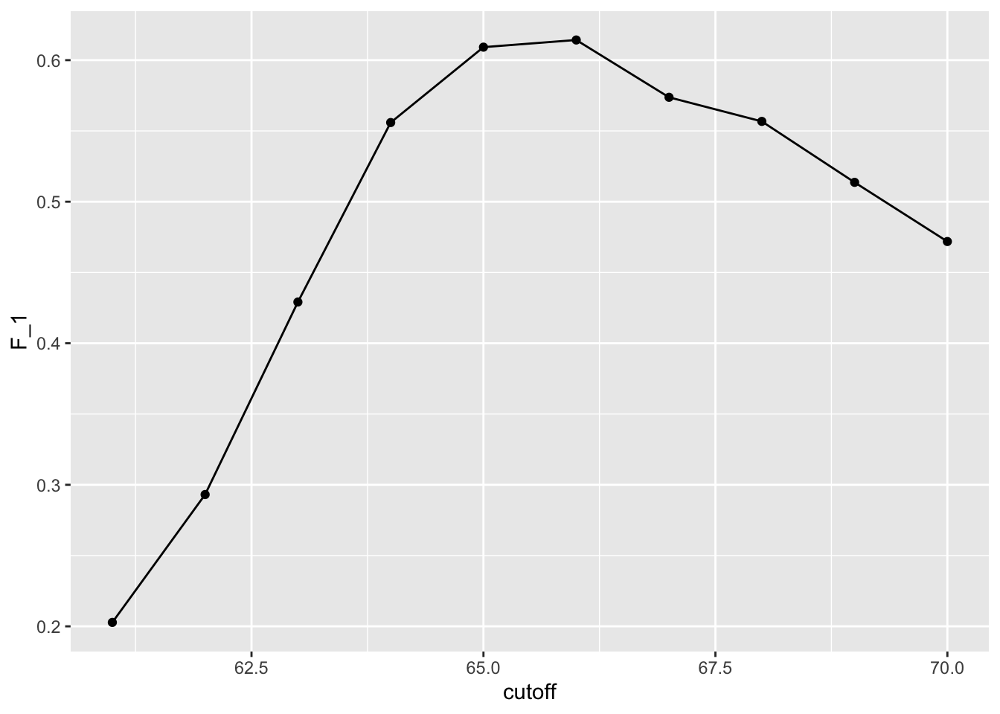
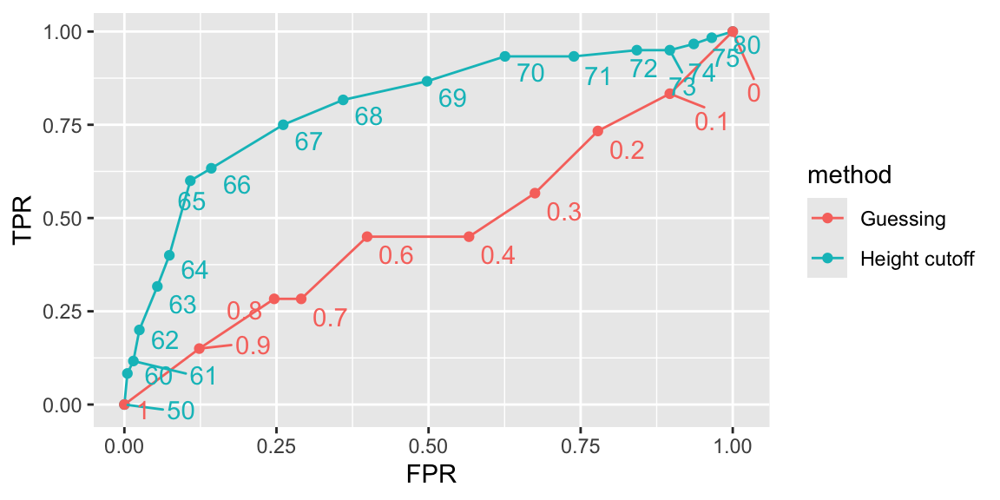
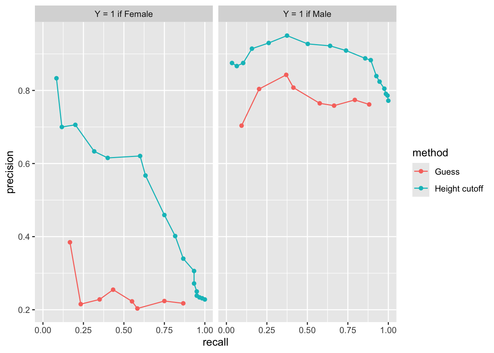

library(caret)
library(dslabs) Evaluation Metrics
Keywords
Machine Learning
Evaluation metrics
Here we describe ways in which machine learning algorithms are evaluated.
We need to quantify what we mean when we say an algorithm performs better.
We demonstrate with a boring and simple example: how to predict sex using height.
Evaluation metrics
We introduce the caret package, which provides useful functions to facilitate machine learning in R.
We describe caret it in more detail later
Evaluation metrics
- For our first example, we use the height data provided by the dslabs package.
- We start by defining the outcome and predictors.
y <- heights$sex
x <- heights$height Training and test sets
set.seed(2007)
test_index <- createDataPartition(y, times = 1, p = 0.25, list = FALSE) - We can use the result of the
createDataPartitionfunction call to define the training and test sets as follows:
test_set <- heights[test_index, ]
train_set <- heights[-test_index, ] Overall accuracy
- Let’s start by developing the simplest possible machine algorithm: guessing the outcome.
y_hat <- sample(c("Male", "Female"), length(test_index), replace = TRUE) |>
factor(levels = levels(test_set$sex)) - The overall accuracy is simply defined as the overall proportion that is predicted correctly:
mean(y_hat == test_set$sex) [1] 0.479Overall accuracy
Can we do better?
Exploratory data analysis suggests we can because, on average, males are slightly taller than females:
library(tidyverse)
heights |> group_by(sex) |> summarize(avg = mean(height), sd = sd(height)) # A tibble: 2 × 3
sex avg sd
<fct> <dbl> <dbl>
1 Female 64.9 3.76
2 Male 69.3 3.61- How do we make use of this insight?
Overall accuracy
- Let’s try another simple approach: predict
Maleif height is within two standard deviations from the average male.
y_hat <- factor(ifelse(x > 62, "Male", "Female"), levels(test_set$sex)) - The accuracy goes up from 0.50 to about 0.80:
mean(y == y_hat) [1] 0.793- But can we do even better?
Overall accuracy
- Here we examine the accuracy of 10 different cutoffs and pick the one yielding the best result:
cutoff <- seq(61, 70)
accuracy <- sapply(cutoff, function(x){
y_hat <- factor(ifelse(train_set$height > x, "Male", "Female"), levels = levels(test_set$sex))
mean(y_hat == train_set$sex)
}) Overall accuracy
- We can make a plot showing the accuracy obtained on the training set for males and females:

Overall accuracy
- We see that the maximum value is:
max(accuracy) [1] 0.834which is much higher than 0.5.
The cutoff resulting in this accuracy is:
best_cutoff <- cutoff[which.max(accuracy)]
best_cutoff [1] 64Overall accuracy
- We can now test this cutoff on our test set to make sure our accuracy is not overly optimistic:
y_hat <- ifelse(test_set$height > best_cutoff, "Male", "Female") |>
factor(levels = levels(test_set$sex))
y_hat <- factor(y_hat)
mean(y_hat == test_set$sex) [1] 0.806The estimate of accuracy is biased due to slight over-training.
But ultimately we tested on a dataset that we did not train on.
Problem
- The prediction rule we developed in the previous section predicts
Maleif the student is taller than 64 inches.
The confusion matrix
cm <- confusionMatrix(data = y_hat, reference = test_set$sex)
cm$table Reference
Prediction Female Male
Female 24 15
Male 36 188- If we study this table closely, it reveals a problem.
The confusion matrix
- If we compute the accuracy separately we get:
cm$byClass[c("Sensitivity", "Specificity")] Sensitivity Specificity
0.400 0.926 The confusion matrix
This is because the prevalence of males is high.
These heights were collected from three data sciences courses, two of which had higher male enrollment:
cm$byClass["Prevalence"] Prevalence
0.228 So when computing overall accuracy, the high percentage of mistakes made for females is outweighed by the gains in correct calls for men.
This type of bias can actually be a big problem in practice.
If your training data is biased in some way, you are likely to develop algorithms that are biased as well.
The confusion matrix
The fact that we used a test set does not matter because it is also derived from the original biased dataset.
This is one of the reasons we look at metrics other than overall accuracy when evaluating a machine learning algorithm.
A general improvement to using overall accuracy is to study sensitivity and specificity separately.
Sensitivity and specificity
Need binary outcome.
Sensitivity is defined as the ability of an algorithm to predict a positive outcome when the actual outcome is positive: \(\hat{y}=1\) when \(y=1\).
Because an algorithm that calls everything positive has perfect sensitivity, this metric on its own is not enough to judge an algorithm.
Specificity, is the ability of an algorithm to not predict a positive \(\hat{y}=0\) when the actual outcome is not a positive \(y=0\).
Sensitivity and specificity
We can summarize in the following way:
High sensitivity: \(y=1 \implies \hat{y}=1\).
High specificity: \(y=0 \implies \hat{y} = 0\).
Although the above is often considered the definition of specificity, another way to think of specificity is by the proportion of positive calls that are actually positive:
High specificity: \(\hat{y}=1 \implies y=1\).
Sensitivity and specificity
- To provide precise definitions, we name the four entries of the confusion matrix:
Attaching package: 'kableExtra'The following object is masked from 'package:dplyr':
group_rows| Actually Positive | Actually Negative | |
|---|---|---|
| Predicted positive | True positives (TP) | False positives (FP) |
| Predicted negative | False negatives (FN) | True negatives (TN) |
Sensitivity and specificity
Sensitivity is typically quantified by \(TP/(TP+FN)\).
This quantity is referred to as the true positive rate (TPR) or recall.
Specificity is defined as \(TN/(TN+FP)\).
This quantity is also called the true negative rate (TNR).
Sensitivity and specificity
There is another way of quantifying specificity which is \(TP/(TP+FP)\)
This quantity is referred to as positive predictive value (PPV) and also as precision.
Note that, unlike TPR and TNR, precision depends on prevalence since higher prevalence implies you can get higher precision even when guessing.
The multiple names can be confusing, so we include a table to help us remember the terms.
Sensitivity and specificity
| Measure of | Name_1 | Name_2 | Definition | Probability representation |
|---|---|---|---|---|
| sensitivity | TPR | Recall | \(\frac{\mbox{TP}}{\mbox{TP} + \mbox{FN}}\) | \(\mbox{Pr}(\hat{Y}=1 \mid Y=1)\) |
| specificity | TNR | 1-FPR | \(\frac{\mbox{TN}}{\mbox{TN}+\mbox{FP}}\) | \(\mbox{Pr}(\hat{Y}=0 \mid Y=0)\) |
| specificity | PPV | Precision | \(\frac{\mbox{TP}}{\mbox{TP}+\mbox{FP}}\) | \(\mbox{Pr}(Y=1 \mid \hat{Y}=1)\) |
Sensitivity and specificity
- The caret function
confusionMatrixcomputes all these metrics:
cm$overall["Accuracy"] Accuracy
0.806 cm$byClass[c("Sensitivity","Specificity", "Prevalence")] Sensitivity Specificity Prevalence
0.400 0.926 0.228 Sensitivity and specificity
Because prevalence is low, failing to predict actual females as females (low sensitivity) does not lower the overall accuracy as much as failing to predict actual males as males (low specificity).
This is an example of why it is important to examine sensitivity and specificity and not just accuracy.
Before applying this algorithm to general datasets, we need to ask ourselves if prevalence will be the same.
Balanced accuracy and \(F_1\) score
\[ \frac{1}{\frac{1}{2}\left(\frac{1}{\mbox{recall}} + \frac{1}{\mbox{precision}}\right) } \]
Balanced accuracy and \(F_1\) score
- Because it is easier to write, you often see this harmonic average rewritten as:
\[ 2 \times \frac{\mbox{precision} \cdot \mbox{recall}} {\mbox{precision} + \mbox{recall}} \]
Balanced accuracy and \(F_1\) score
- The \(F_1\)-score can be adapted to weigh specificity and sensitivity differently.
\[ \frac{1}{\frac{\beta^2}{1+\beta^2}\frac{1}{\mbox{recall}} + \frac{1}{1+\beta^2}\frac{1}{\mbox{precision}} } \]
Balanced accuracy and \(F_1\) score
The
F_measfunction in the caret package computes this summary withbetadefaulting to 1.Let’s rebuild our prediction algorithm, but this time maximizing the F-score instead of overall accuracy:
cutoff <- seq(61, 70)
F_1 <- sapply(cutoff, function(x){
y_hat <- factor(ifelse(train_set$height > x, "Male", "Female"), levels(test_set$sex))
F_meas(data = y_hat, reference = factor(train_set$sex))
}) Balanced accuracy and \(F_1\) score
- As before, we can plot these \(F_1\) measures versus the cutoffs:

Balanced accuracy and \(F_1\) score
- We see that it is maximized at \(F_1\) value of:
max(F_1) [1] 0.614- This maximum is achieved when we use the following cutoff:
best_cutoff <- cutoff[which.max(F_1)]
best_cutoff [1] 66- A cutoff of 66 makes more sense than 64.
Balanced accuracy and \(F_1\) score
- Furthermore, it balances the specificity and sensitivity of our confusion matrix:
y_hat <- ifelse(test_set$height > best_cutoff, "Male", "Female") |>
factor(levels = levels(test_set$sex))
sensitivity(data = y_hat, reference = test_set$sex) [1] 0.633specificity(data = y_hat, reference = test_set$sex) [1] 0.857- We now see that we do much better than guessing, that both sensitivity and specificity are relatively high.
ROC and precision-recall curves

ROC and precision-recall curves
- The packages pROC and plotROC are useful for generating these plots.
ROC and precision-recall curves

Mean Squared Error
Up to now we have described evaluation metrics that apply exclusively to categorical data.
Specifically, for binary outcomes, we have described how sensitivity, specificity, accuracy, and \(F_1\) can be used as quantification.
However, these metrics are not useful for continuous outcomes.
In this section, we describe how the general approach to defining “best” in machine learning is to define a loss function, which can be applied to both categorical and continuous data.
Mean Squared Error
- Most commont metric to minimize is mean squared error (MSE):
\[ \text{MSE} \equiv \mbox{E}\{(\hat{Y} - Y)^2 \} \]
- How do we estimate this?
Mean Squared Error
- Because in practice we have tests set with many, say \(N\), independent observations, a commonly used observable estimate of the MSE is:
\[ \hat{\mbox{MSE}} = \frac{1}{N}\sum_{i=1}^N (\hat{y}_i - y_i)^2 \]
- with the \(\hat{y}_i\) generated completely independently from the the \(y_i\).
Note
In practice, we often report the root mean squared error (RMSE), which is simply \(\sqrt{\mbox{MSE}}\), because it is in the same units as the outcomes.
Mean Squared Error
The estimate \(\hat{\text{MSE}}\) is a random variable.
\(\text{MSE}\) and \(\hat{\text{MSE}}\) are often referred to as the true error and apparent error, respectively.
It is difficult to derive the statistical properties of how well the apparent error estimates the true error.
We later introduce cross-validation an approach to estimating the MSE.
Mean Squared Error
There are loss functions other than the squared loss.
For example, the Mean Absolute Error uses absolute values, \(|\hat{Y}_i - Y_i|\) instead of squaring the errors.
\((\hat{Y}_i - Y_i)^2\).
However, in this book we focus on minimizing square loss since it is the most widely used.